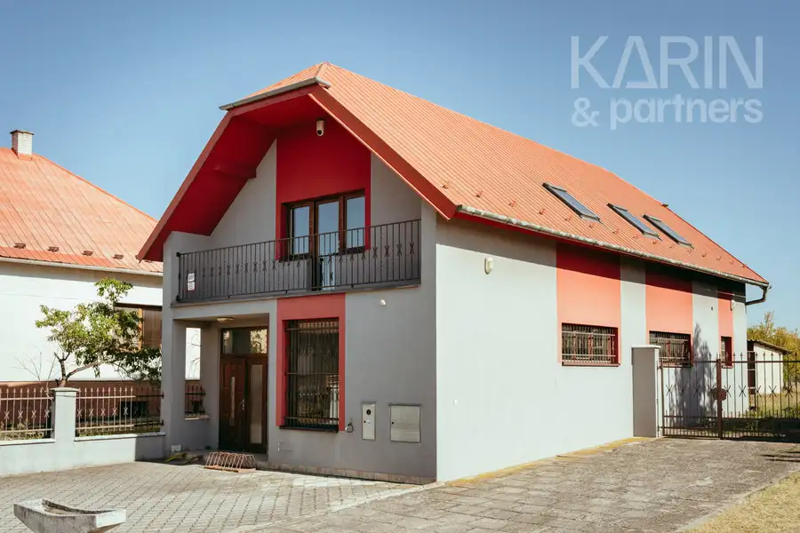
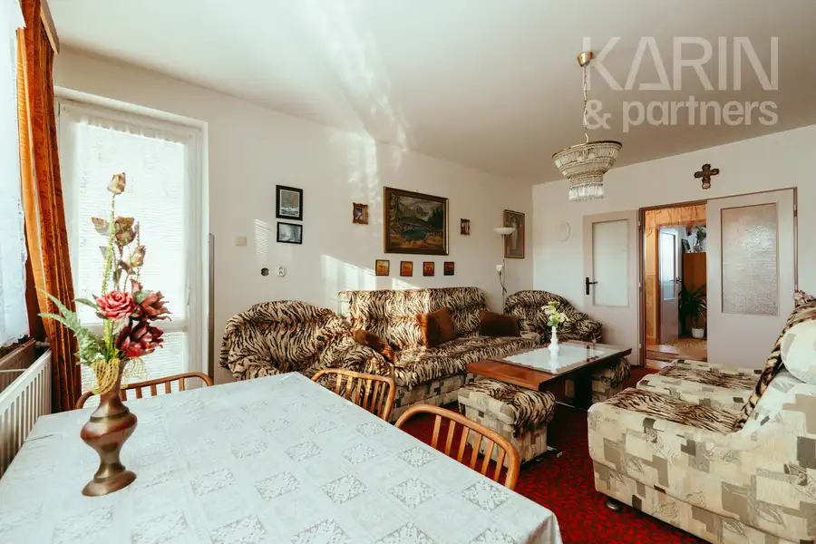
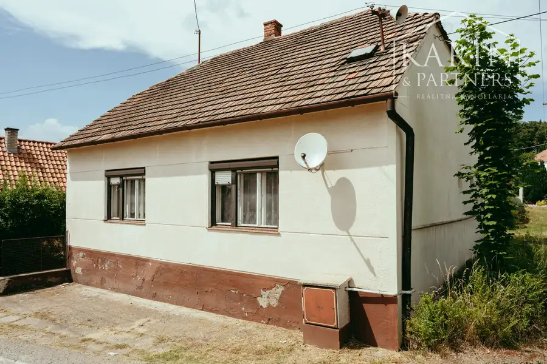

Nová cena: 3i veľkometrážny byt po kompletnej rekonštrukcii
Šaštín-Stráže
- Dispozícia3-izbový
- Plocha82 m²
- StavKompletná rekonštrukcia
- VlastníctvoOsobné
- Energetická triedaB
O nehnuteľnosti
Byt | Záhorie | Šaštín3 izbový byt po kompletnej rekonštrukcii v meste Šaštín-Stráže, neďaleko Základnej školy, ponúka exkluzívne na predaj realitná kancelária KARIN & PARTNERS - veľkometrážny byt o výmere 89,5m2 (úžitková plocha bez pivníc), umiestnený na vyvýšenom prízemí zatepleného bytového domu postaveného v roku 1973- hlavná rekonštrukcia v roku 2014: nová elektrina, plastové okná, murované jadro, dlažby, podlahy, steny/omietky, klimatizácia, kuch.linka- WC s vlastným umývadlom, okná zo spálne a detskej izby situované na východ, z kuchyne a obývačky na západ.- vykurovanie a ohrev teplej vody spoločným kotlom a bojlerom (merače tepla na radiátoroch)- byt sa predáva čiastočne zariadený- k bytu prislúcha vlastná murovaná pivnica (7,65m2) a veľká spoločná kočíkareň, možnosť využívať balkón na medziposchodí.- mesačné náklady pre 3 osoby: 216,-€ (teplá studená voda, kúrenie, fond opráv, upratovanie spol.priestorov službou, poistné)+ elektrina 50€, plyn 5€- kompletná občianska vybavenosť mesta Šaštín-Stráže: školy a materské školy, zdravotné stredisko, autobusové a vlakové spojenie s okolím. Diaľnica D2 vzdialená 14km, okresné mesto Senica 19km Maklér: Milan Polóny, 0903 11 22 55, polony@karinpartners.skV cene je zahrnutý kompletný profesionálny realitný servis - kúpna zmluva, kolok, návrh na vklad, odovzdanie nehnuteľnosti, ako aj realitné a finančné poradenstvo.Cena nehnuteľnosti je vrátane provízie pre RKFinancovanie nehnuteľnosti Vám bezplatne zabezpečíme podľa aktuálnych ponúk bánk, prostredníctvom našich certifikovaných finančných konzultantov s licenciou od NBS.
Parametre
| Cellar area | 8 m² |
|---|---|
| Cena vrátane energií | Nie |
| Druh | 3 izbový byt |
| Dátum zverejnenia | 14. 9. 2026 |
| Energetická náročnosť | Z klasických materiálov |
| Energetický certifikát budovy | B |
| Orientácia | Západná, Východná |
| Počet izieb / miestností | 3 |
| Počet nadzemných podlaží | 3 |
| Počet pivníc | 1 |
| Rok poslednej rekonštrukcie | 2014 |
| Rok výstavby | 1973 |
| Stav nehnuteľnosti | Kompletná rekonštrukcia |
| Telekomunikácie | Internet, Satelit |
| Typ | Predaj |
| Umiestnenie | Zvýšené prízemie |
| Vlastníctvo | Osobné |
| Vybavenie | Pivnica, Verejné parkovanie |
| Vykurovanie | Ústredné, Klimatizacia |
| Úžitková plocha | 82 m² |
Kde to je


Mohlo by Vás zaujímať

Komerčné priestoryNové10 175 000 €Podnikateľský objekt s možnosťou okamžitého podnikania v obci Borský Mikuláš Borský Mikuláš 163 m² podnikanie | dom | Záhorie | obchodPodnikateľský objekt s predprípravou na ubytovanie v obci Borský Mikuláš, naposledy využívaný ako obchod s…
BytNové10 119 000 €Nová cena: 3i priestranný byt s garážou a záhradou v obci Smolinské Smolinské 3-izbový77.1 m² byt | záhrada | Záhorie | Smolinské3 izbový byt po čiastočnej rekonštrukcii v obci Smolinské, v tichej ulici a oproti základnej škole ponúka…
DomNové10 79 000 €Rodinný dom v pôvodnom stave v meste Šaštín-Stráže Šaštín-Stráže 80 m² ZÁHORIE | DOM | ŠAŠTÍN | PRÍRODARealitná kancelária KARIN & PARTNERS ponúka exkluzívne na predaj 2 izbový rodinný dom (so ďalším starším 2i…